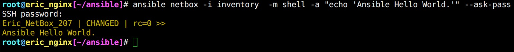
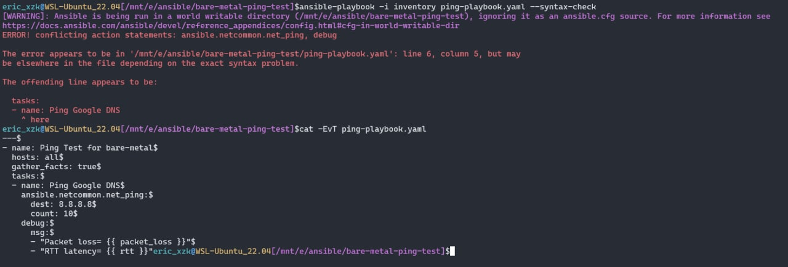
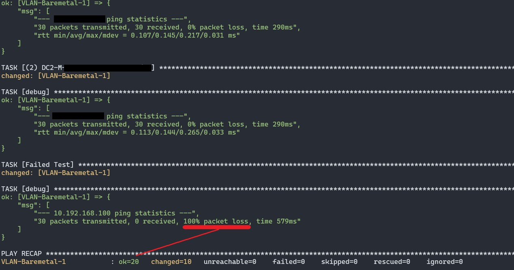

我的第一支 Ansible。 Ansible Hello World
Contents

更新紀錄
- 2022.12
- 刪改原有內容、新增
全域/區域 變數設定方式 - 新增
playbook
- 刪改原有內容、新增
簡介
Ansible 是一種開源配置工具，Linux 系統管理員使用的自動化工具。
Ansible 能讓系統管理員從一個控制節點（即 Ansible 服務器）管理數百台服務器。
Ansible 不需要任何代理，並且可以在 SSH 和 python 上工作。
註: 不需要代理的意思是目標主機並不需要安裝 Agent。
簡介出自朝陽資工系-王德譽老師#Ansible 前言
朝陽資訊學院兩尊神都提供 「終生保固」 讚讚 XD
此篇會記錄我的第一支 Ansible 腳本配置~
Ansible command shell completion
Adding Ansible command shell completion
官方建議安裝 argcomplete 來為 bash, zsh, tcsh 新增 [tab][tab] 自動補齊的功能。
(WSL Ubuntu 22.04 並沒有自帶 pip，透過以下指令安裝)
|
|
|
|
Iventory File (hostfile)
這個檔案內主要記錄主機 列表/群組。範例可以參考:
|
|
我的 Inventory
|
|
其中 netbox 與 ALL_207 是 群組名稱 Group Name
在 netbox 群組用了一個主機別名 (Host alias)
ALL_207 群組用了 range of hosts Adding ranges of hosts
我使用的 inventory file format 屬於 INI。 Ansible 亦支援 YAML format
YAML format example:
|
|
查看 hosts list
查看全部
|
|
以我的 iventory file 來說，輸出結果就會是:
|
|
常用變數
ansible_ssh_host: 主機 IP / Domain name
ansible_ssh_port: 如果不是預設 SSH Port 22 的話，在這邊指定
ansible_ssh_user: 使用 SSH 登入使用者，預設 root
ansible_ssh_pass: SSH 明文密碼。 不推薦使用 註1
ansible_sudo_pass: SSH sudo 明文密碼。 不推薦使用 註2
註1. 推薦使用 --ask-pass
註2. 推薦使用 --ask-sudo-pass
全域/區域 變數設定方式
若有多重 inventory file 來源，請參考 Managing inventory variable load order
|
|
|
|
我的 ansible.cfg
Ansible Configuration Settings
Ansible 支援多種來源設定組態 (Configuration)，包含名為 ansible.cfg 的 ini 、環境變數、命令選項、playbook 關鍵字、變數等。
ansible.cfg 讓使用者看到所有可用的組態設定、其預設值、如何設定等。
因有多種組態設定來源，可能不一致，Ansible 以下列順序搜尋，先找到後其他就忽略。\
- 環境變數 ANSIBLE_CONFIG
- 現在工作目錄下的 ansible.cfg
- 使用家目錄下的 ~/.ansible.cfg
- 系統 /etc 目錄下的 /etc/ansible/ansible.cfg
ansible.cfg Example
類別
|
|
Tips: -v 代表反轉
查看類別下細項
|
|
我的 ansible.cfg
|
|
加上 host_key_checking = false 略過檢查 SSH fingerprint
Ansible provisioning ERROR! Using a SSH password instead of a key is not possible
Demo
這次 Demo 示範的是屬於 Ansible “Ad-hoc” command.
Ad hoc 是一個拉丁文常用短語。這個短語的意思是「特設的、特定目的的、即席的、臨時的、將就的、專案的」。
整個 command 結構大概會長這樣:
|
|
【包含了許多範例】Introduction to ad-hoc commands
|
|
嫌太慢嗎?
|
|
-f --forks 代表 Ansible 會同時使用 N 個 processes 去執行。預設 5 個
Playbook
推薦閱讀
▲ 執行 Playbook 前透過內建 options 來幫助再次確認 task，debug 時也很好用。
▲ 介紹利用 debug, register, fail module 來幫助除錯與檢查。
Bare-Metal ping test Playbook
有新 server 上架，完成所有設定後都必須測試所有網段連線正常。過去都是建一台 VM 之後一個一個切換 Port-Group => nmcli 設定 IP => 使用 ping 測試，這次透過 Ansible Playbook 幫我們自動執行 ping 的步驟，節省一些時間。(切換 Port-Group 變成新增好幾張 NIC，並且綁定 IP)
inventory
|
|
ansible.cfg
|
|
ping-playbook.yaml
|
|
- Ansible 內建
pingmodule 只能回應pong，而且沒辦法指定目標IP - ansible.netcommon.net_ping 看起來十分強大，但只能用在網通設備上 (必須指定
ansible_network_os) - 總和以上，還是選擇熟悉的
shellmodule! 搭配tail還能過濾輸出結果~ 不然官方的 Using filters to manipulate data 落落長

▲ debug 模組必須獨立使用，不能併在同一個 task 裡面! 不然會報 ERROR! conflicting action statements (--syntax-check 會報在 - name 這邊 Umm… 好喔) 謝謝小飛機~

▲ v0.1 版本即使 ping 沒通也會列在 OK 當中，下一版改進項目 ++
Author 老柯
LastMod 2022-12-13 (d5b2764)